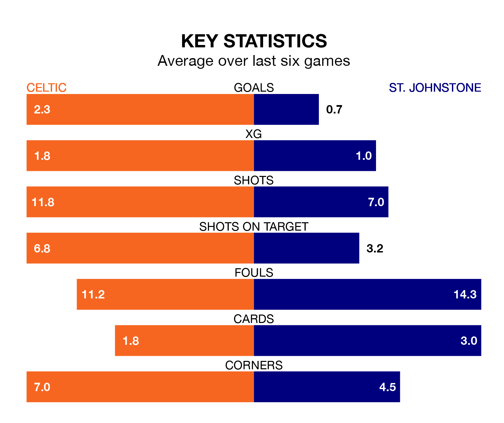

Celtic host St. Johnstone in Saturday's match at Celtic Park looking to bounce back from defeat last time out in the Premiership.
The Bhoys, who sit second in the league after 29 games, fell to a 2-0 away defeat to Hearts on March 3.
They face a St. Johnstone side who secured a draw in their last match, a 1-1 tie with Livingston, and who sit ninth in the table.
With 68 goals in 29 games so far this season, Celtic are the league's highest scorers with 2.3 goals per game. And they are conceding fewer than average, letting in 22 goals at a rate of 0.8 per game.
St. Johnstone, meanwhile, are below average scorers, with 0.7 goals per game, compared to a league average of 1.3. They have conceded 1.3 goals per game.
In the last 10 years, Celtic and St. Johnstone have played each other on 36 occasions. Celtic won 28 of them, St. Johnstone two, and they drew six times.
On average, the Bhoys scored 2.6 goals and the Saints 0.6 in those matches.
Their last meeting was on December 3, when Celtic won 3-1 away.
In Joe Hart, the Bhoys can rely on one of the league's safest pair of hands. He has kept 11 clean sheets in his 28 appearances this season, and only two other 'keepers – Rangers's Jack Butland and Hearts's Zander Clark – have been able to prevent the opposition scoring on more occasions in the Premiership.
In the Saints' net, Dimitar Mitov has eight clean sheets in 29 games. He has conceded a goal every 77 minutes, 80% more often than the 137 minutes between goals for Hart.
The hosts are in reasonable form in the Premiership, with three wins and two draws from their last six games.
With a win and a draw over that period, the away side's form is much worse – they have taken four points from 18, compared to Celtic's 11.
Updated: 09:34 (UTC), 08/03/24